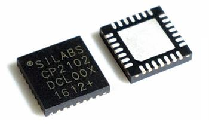
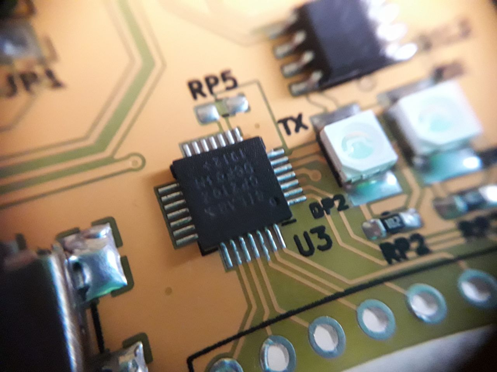

Fixing CP2102 with custom VID/PID
Sat 13 June 2020
I bought some cheap CP2012 serial IC chips from AliExpress. Maybe it was too cheap at only SGD3.86 for 5 pieces with free shipping. Of course, I should have expected some issues to pop up when I started using it.

Before I elaborate on the issue, I'd like to show off my fine hand-soldering skills. heheh
I did not have a hot-air gun so I soldered it using a soldering iron with lots of flux.

The Issue - Custom VID & PID
The issue is rather simple and so is fixing it too.
The device is a Silicon Labs CP2102. However, upon connecting the USB port to my computer, I realised that it was detected as a different device.
$ lsusb
Bus 006 Device 010: ID 11ca:0204 VeriFone Inc VeriFone USB to UART Bridge Controller
It appears that the CP2012 can actually be configured or pre-programmed to have a different VID/PID. In Windows, it can be done using the CP21xxCustomizationUtility.exe tool found in AN721.
However, resetting it to default is a challenge, because one must create and install the custom driver for the custom VID/PID first, before using the tool to change it back to default.
Fixing it in Linux
It is easier to fix it in Linux, because the kernel allows for easy overriding and loading of drivers for a different VID/PID device without modifying the driver.
I also found an unofficial command-line tool to program these CP2102 easily. cp210x-cfg.
First, connect and check the ID of the device. Here, mine is detected as 11ca:0204.
$ lsusb
Bus 006 Device 010: ID 11ca:0204 VeriFone Inc VeriFone USB to UART Bridge Controller
Load the driver and override the ID to be our custom ID. This must be done as superuser.
$ sudo -s
# modprobe cp210x
# echo 11ca 0204 > /sys/bus/usb-serial/drivers/cp210x/new_id
# exit
Now it will be detected as a proper serial device.
$ ls /dev/serial/by-id/
usb-Silicon_Labs_VeriFone_USB_to_UART_Bridge_Controller_0001-if00-port0
$ realpath /dev/serial/by-id/usb-Silicon_Labs*
/dev/ttyUSB0
You can use it as it is, however this means we have to keep overriding the ID for every PC we connect to.
We can change it back to the original VID & PID using the cp210x-cfg tool.
$ git clone https://github.com/DiUS/cp210x-cfg
$ cd cp210x-cfg/
Install dependencies and make it.
$ sudo apt install -y libusb-1.0-0-dev
$ make
Program it back to the original VID/PID. From AN721 documentations, it tells us that the default for CP2102 is 10C4:EA60.
$ sudo ./cp210x-cfg -m 11ca:0204 -V 0x10C4 -P 0xEA60
Finally, we have the original ID back
$ lsusb
Bus 006 Device 065: ID 10c4:ea60 Silicon Labs CP210x UART Bridge
Reload the original serial driver again.
$ modprobe cp210x
For completeness, let's change the product name too
Before changing
$ sudo ./cp210x-cfg -m 10C4:EA60
ID 10c4:ea60 @ bus 006, dev 105: VeriFone USB to UART Bridge Controller
Model: CP2102
Vendor ID: 10c4
Product ID: ea60
Name: VeriFone USB to UART Bridge Controller
Serial: 0001
Command to change
$ sudo ./cp210x-cfg -m 10C4:EA60 -N "zst123's CP2102 UART Bridge"
After changing
$ sudo ./cp210x-cfg -m 10C4:EA60
ID 10c4:ea60 @ bus 006, dev 106: zst123's CP2102 UART Bridge
Model: CP2102
Vendor ID: 10c4
Product ID: ea60
Name: zst123's CP2102 UART Bridge
Serial: 0001
Conclusion
This gave me a interesting adventure into understanding how USB devices are matched to their drivers using its VID/PID. Buying electronics from these non-reputable sellers can sometimes provide some fun experiences to improve your troubleshooting skills in the process. It also comes at a low cost too.
Category: Electronics Tagged: CP2102 Serial